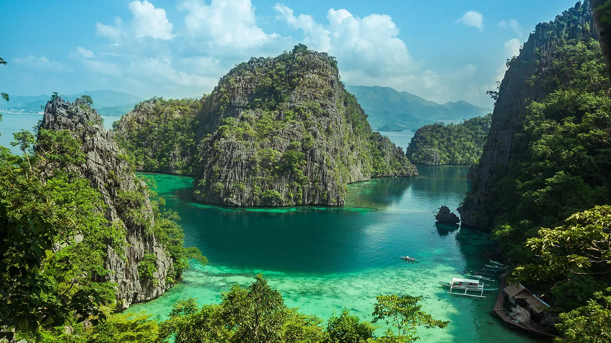
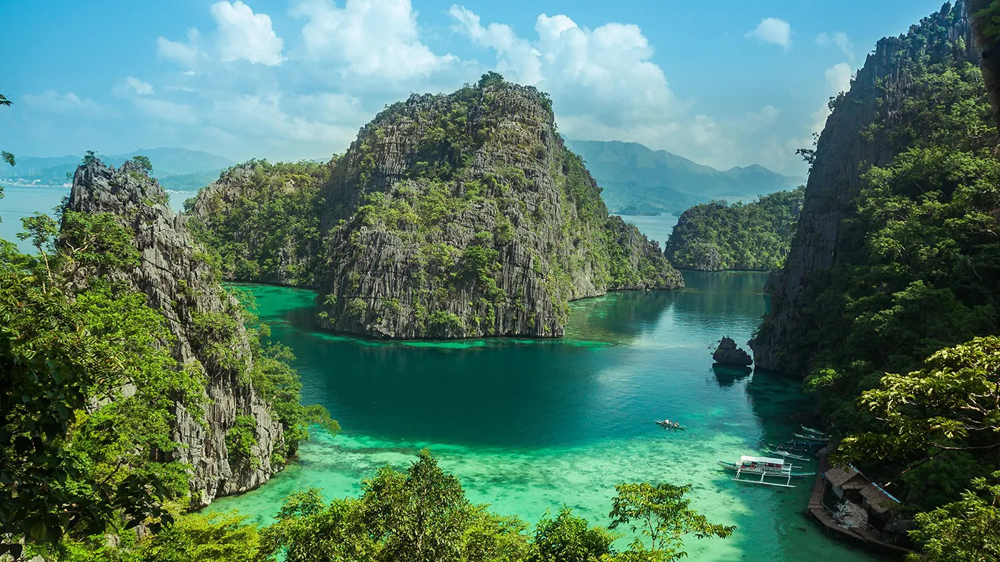

Top 10 Philippine Destination


 



Boracay Island Aklan
Boracay is a small island in the central Philippines. It's known for its resorts and beaches. Along the west coast,
White Beach is backed by palm trees, bars and restaurants. On the east coast, strong winds make Bulabog Beach a hub for water sports.
Nearby, the observation deck on Mount Luho offers panoramic views over the island. Offshore,
coral reefs and shipwrecks are home to diverse marine life.
Siargao Island
Siargao is a tear-drop shaped island in the Philippine Sea situated 196 kilometers southeast of Tacloban.
It has a land area of approximately 437 square kilometres. The east coast is relatively straight with one deep inlet,
Port Pilar.
Pagudpud, Ilocos Norte
Pagudpud used to be part of the municipality of Bangui but On July 5, 1954, it was made into a separate town. On July 6, 2018,
the Sandiganbayan sentenced the former mayor, Reynolan Sales to 12 – 17 years imprisonment for the 1999 killing of Rafael Benemerito,
his political rival who is also a former mayor of the town.
Baguio City, Benguet
Baguio, on the Philippines Luzon island, is a mountain town of universities and resorts. Called the “City of Pines,”
its particularly popular in summer due to unusually cooler weather. At its center is Burnham Park, with gardens and a lake. Nearby,
Baguio Cathedral,completed in 1936, has a rose-hued exterior. The main thoroughfare is Session Road, lined with shops,
restaurants and entertainment options.
Batangas
Batangas, officially the Province of Batangas, is a province in the Philippines located in the Calabarzon region on Luzon.
Its capital is the city of Batangas, and is bordered by the provinces of Cavite and Laguna to the north, and Quezon to the east.
Coron, Palawan
Coron, officially the Municipality of Coron, is a 1st class municipality in the province of Palawan, Philippines.
According to the 2020 census, it has a population of 65,855 people.
Hundred Islands, Alaminos Pangasinan
The national park was created by Presidential Proclamation No. 667, covering an area of 16.76 square kilometres (6.47 sq mi)
and signed by President Manuel L. Quezon on January 18, 1940, for the benefit and enjoyment of the people of the Philippines and
known as the Hundred Islands National Park (HINP). The Republic Act No. 3655 signed on June 22, 1962, created the
Hundred Islands Conservation and Development Authority (HICDA), for the conservation, development and management of HINP. The park
including Lucap Bay was transferred from HICDA to the Philippine Tourism Authority (PTA) by virtue of Section 35 of Presidential Decree No. 564.
Cebu City
Cebu is a province of the Philippines, in the country’s Central Visayas region, comprising Cebu Island and more than 150
smaller surrounding islands and islets. Its prosperous port capital, Cebu City, retains landmarks from its 16th-century Spanish colonial past,
including the Basilica Minore del Santo Niño church and triangular
Fort San Pedro. Tops, an observation deck on Mt. Busay, has sweeping views over the city.
Sagada, Mountain Province
Sagada is a town in the Cordillera Mountains, within the Philippines Mountain Province.
Echo Valleys hanging coffins are displayed high on cliffs,
while centuries-old coffins are stacked in burial sites like Lumiang Cave.
The nearby Sumaguing Cave has unusual limestone formations. To the north, Bomod-ok Falls has a natural swimming pool.
Rice terraces are carved into the area's surrounding mountainsides.
Vigan City, Ilocos Sur
Vigan is a city in the Philippines, on the west coast of Luzon island. It's known for its preserved Spanish colonial and Asian architecture.
Calle Crisologo dominates the Mestizo district, with its cobblestone streets, malecón, horse-drawn carriages and rustic mansions.
Near the white baroque Vigan Cathedral are Plaza Salcedo, offering fountain light shows, and Plaza Burgos, known for its street-food stalls.